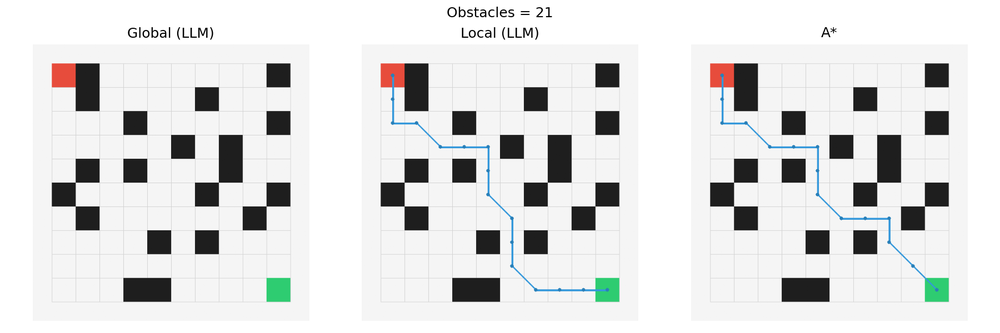
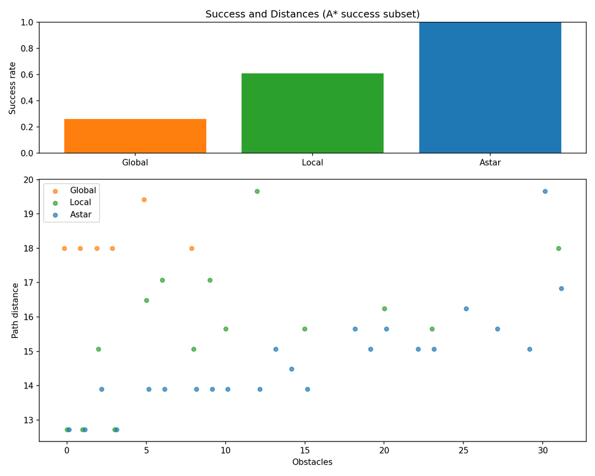
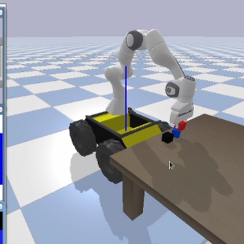

How Well Can LLMs Plan for Robots? From Grid-World Navigation to Mobile Manipulation
A two-part study of large language models as robot planners: first as path planners in grid worlds, where they can be compared directly against classical search, and then as high-level task planners inside a full task and motion planning (TAMP) pipeline for a mobile manipulator.
Path planning in grid worlds. I compared LLM planning policies against an A* baseline. Vanilla local policies, which choose one step at a time, reached about 60% success on A*-solvable cases, while vanilla global one-shot planning reached only about 25% and degraded faster as obstacle density increased, showing that step-by-step local prompting is more robust. I then explored improvements through richer local context (5×5 windows, clearance features), prompt refinements (few-shot examples, ranking), and hybrids with classical priors (subgoal induction, A* cost-to-go).


Task and motion planning for mobile manipulation. I built a simulation framework from the ground up in PyBullet in which a Clearpath Husky base with a Franka Panda arm executes multi-step language instructions, combining LLM-based task planning with end-effector camera perception and IK motion execution. The system reliably picked single cubes and stacked two cubes, while stacking more cubes exposed challenges in motion smoothness, base drift, and grasp retries.

Together, the two studies show that LLMs are useful for high-level, symbolic decisions but need classical planning, grounded perception, and feedback-driven correction to reach the reliability robots need.